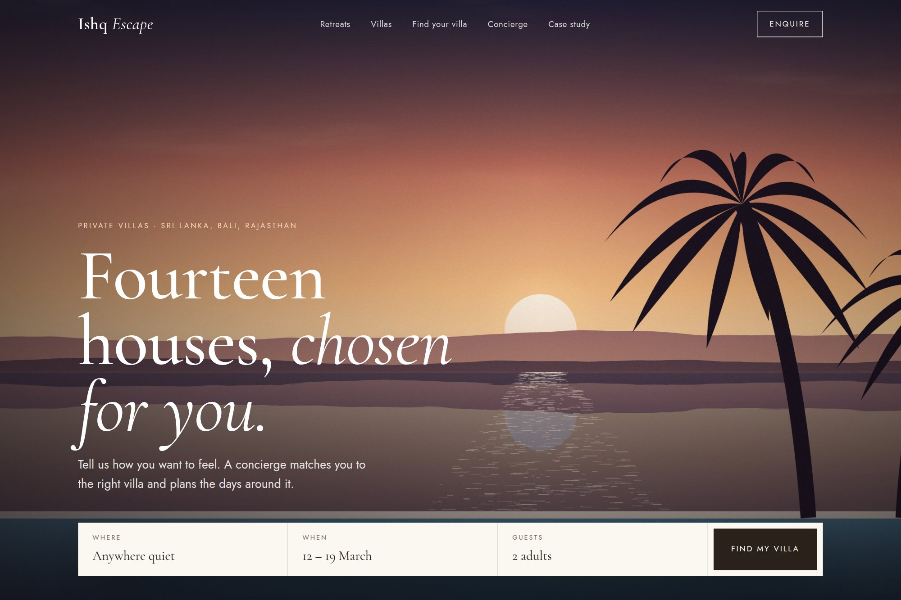

08 — Hospitality booking
Luxury booking with concierge-led conversion.
A full-funnel villa booking concept balancing discovery, private enquiry and confirmation in one flow.

- Type
- Concept · self-directed
- Discipline
- Web · UI · Brand
- Deliverables
- Guest journey map, booking flow, concierge scheduling
- Scope
- 64 screens
01The brief
High-value villa bookings rarely close in a single session. Discovery, private enquiry and confirmation usually live in separate products with separate tones.
The concept had to keep browsing as valuable as booking, and give the concierge a place inside the funnel rather than after it.
02Design decisions
- Storytelling and imagery layered so browsing carries the same weight as the booking step.
- Villa matching driven by stated guest preferences rather than search filters alone.
- Concierge scheduling built into the funnel, not bolted on after confirmation.
03Outcome
Sixty-four screens mapping discovery through aftercare, with three retreat themes — forest, ocean and heritage — demonstrating how the system absorbs estates with very different atmospheres.
A concept project designed in-house by Yonder Tech, not a client engagement. Figures describe the delivered design system, not commercial results.